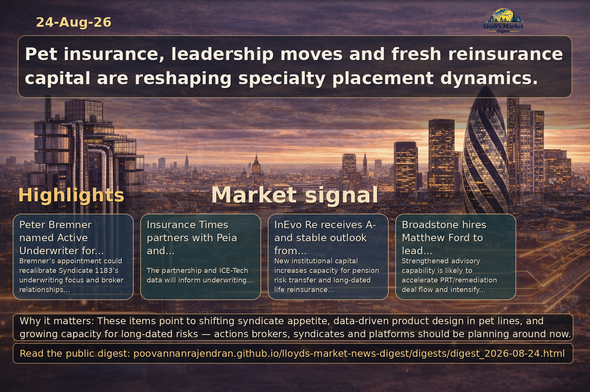

Executive summary
Insurance Times' announced Pet Pledge partnership with the Pet and Equine Insurance Association (Peia), and the ICE‑Tech research initiative, foregrounds pet insurance as a strategic specialty line. For Lloyd's syndicates, global specialty carriers and brokers this creates an opportunity to leverage emerging welfare and veterinary data, recalibrate underwriting and capacity, and position placement platforms and distribution strategies ahead of a December 2026 launch and a 2027 roundtable series.…
View LinkedIn Visual Summary

Generated from the same day's LinkedIn digest text.
Key themes
- Pet insurance as a growing specialty class for Lloyd’s and global syndicates
- Data-driven underwriting and veterinary cost analytics (ICE‑Tech)
- Broker-led distribution and placement platform opportunities
- Reinsurance and capacity management for emerging loss patterns
- Claims, cost containment and vet-network/telemedicine strategies
- ESG/reputational and animal-welfare considerations for corporate clients
Source: reinsurancene.ws
Why it matters: The appointment of Peter Bremner as Active Underwriter for Lloyd’s Syndicate 1183 is a material leadership change with direct implications for underwriting strategy, broker relationships and syndicate distribution across specialty lines.
- Expect a potential recalibration of Syndicate 1183’s underwriting focus and appetite, driven by Bremner’s track record and market relationships, which brokers must reflect in placement approaches.
- Senior underwriter moves can shift broker alignments and treaty priorities; top brokers should proactively re-engage syndicate contacts to clarify capacity and service expectations.
- Market participants should monitor any strategic product or regional emphasis changes at 1183 that could create openings for competitors or partnership opportunities on placement platforms.
Source: insurancetimes.co.uk
Why it matters: The Pet Pledge partnership and ICE‑Tech mapping project create actionable data and stakeholder forums that directly affect how brokers, syndicates and placement platforms evaluate appetite, pricing and product design in pet lines — a sector increasingly moved into specialty corridors at Lloyd’s and in global capacity markets.
- Underwriting & capacity: Syndicates and capacity providers should incorporate ICE‑Tech’s welfare mapping into loss modelling to anticipate frequency/severity shifts, refine exclusions, and structure facultative/reinsurance support for accelerating veterinary inflation.
- Distribution & placement platforms: Brokers and electronic placing platforms can use the Peia forum and resulting research to design targeted propositions, improve broker‑client conversations on preventive cover add‑ons, and pilot placement workflows for MGAs and specialty programs ahead of market launch.
- Claims & operational strategy: Insurers should explore partnerships with vet networks, telemedicine and preventive care providers to control claims inflation, use ICE‑Tech data for early intervention programs, and align ESG/comms strategies around animal‑welfare outcomes presented at the 2027 roundtables
Source: reinsurancene.ws
Why it matters: Historical archive content provides context on catastrophe losses, reinsurer strategy and consolidation that remain relevant when assessing current capacity, pricing cycles and placement platform positioning.
- Archive items on China floods and Swiss Re commentary underscore evolving catastrophe exposure and the need to stress-test models for Asia-focused portfolios.
- References to potential asset sales and restructuring (eg Swiss Re Admin Re discussions) illuminate drivers of capacity shifts that impact Lloyd’s syndicate and broking strategy.
- Use the archive as a benchmarking resource for trend analysis when evaluating rate adequacy, retrocession costs and long-term placement platform product development.
Source: reinsurancene.ws
Why it matters: AM Best’s A- on InEvo Re signals credible institutional capital (Macquarie) entering asset-intensive life reinsurance, creating a competitive provider for pension risk transfer and long-dated liability solutions that will affect syndicate portfolios and broker placement strategies.
- Institutional-backed life reinsurers increase market capacity for pension risk transfer, pressuring pricing and reshaping syndicate appetite for annuity and longevity business.
- Strong rating and parent support improve counterparty confidence for brokers and placement platforms arranging long-dated transactions and longevity pools.
- Syndicates and brokers should evaluate partnership or distribution opportunities with asset managers entering reinsurance, and reassess capital allocation for long-tail life exposures.
Source: reinsurancene.ws
Why it matters: Broadstone’s appointment of Matthew Ford strengthens advisory depth in pension risk transfer and remediation, increasing competition for consultancy-led PRT mandates and influencing how brokers and syndicates structure multi-party transactions.
- Enhanced advisory capability accelerates remediation and PRT deal flow, creating more demand for capacity and bespoke reinsurance solutions from Lloyd’s syndicates and specialty reinsurers.
- Brokers should expect stronger advisory competition on pricing, structuring and capital management proposals when engaging insurers and trustees.
- Syndicates and placement platforms can leverage deeper advisory relationships to co-develop solutions or to streamline execution of complex long-dated liability de-risking trades.